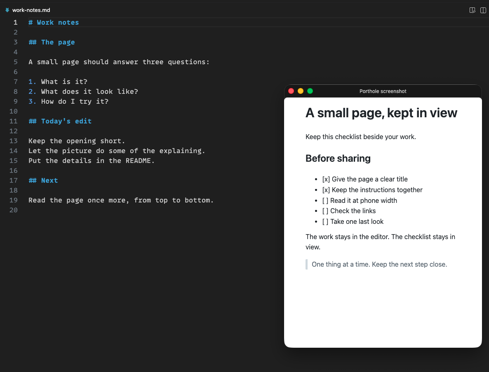

01 / Getting started
Your first floating window.
Keep a checklist, a set of instructions, or a local report beside the work. Start with a file you already have.
01 Open a local file.
In VS Code, open an HTML or Markdown file. Porthole shows its rendered contents in a separate window.
If you haven’t installed Porthole, search for Porthole in the Extensions view, or run:
code --install-extension jlumbroso.porthole02 Pop it out.
With the file open, press Ctrl + Alt + M (⌃⌥M on macOS). You can also right-click the file in the Explorer and choose Pop Out to Floating Window.
The rendered page opens in a compact, pinned window. Tabs, breadcrumbs, and the status bar disappear; the window’s title bar remains.


03 Keep working.
Switch to the editor or another application. With always-on-top enabled, the page stays in view. Edit the source file and its rendered view updates.
04 Put it back.
Focus the floating window and press the same shortcut, or run Porthole: Dock Back into Main Window.
To adjust the window while it floats, use Porthole: Cycle Window Size or Porthole: Toggle Always on Top.